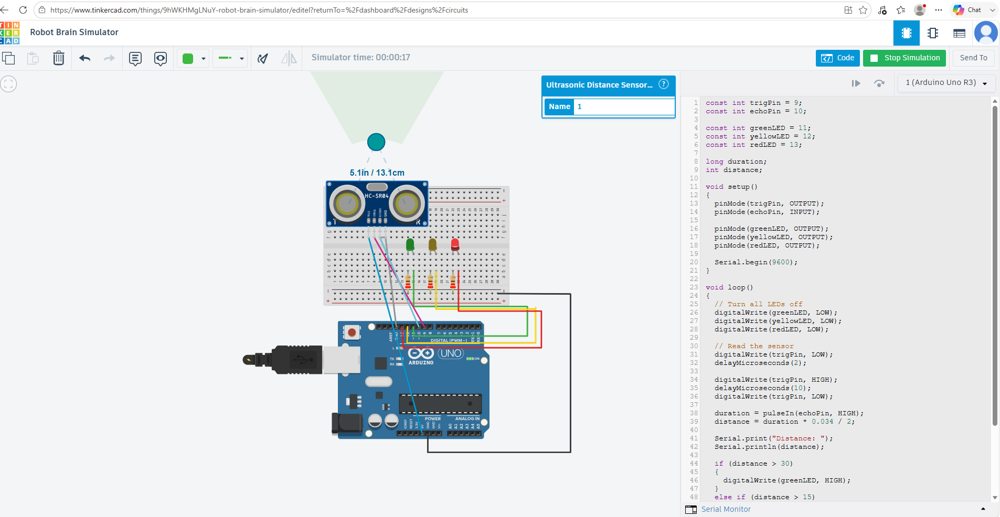
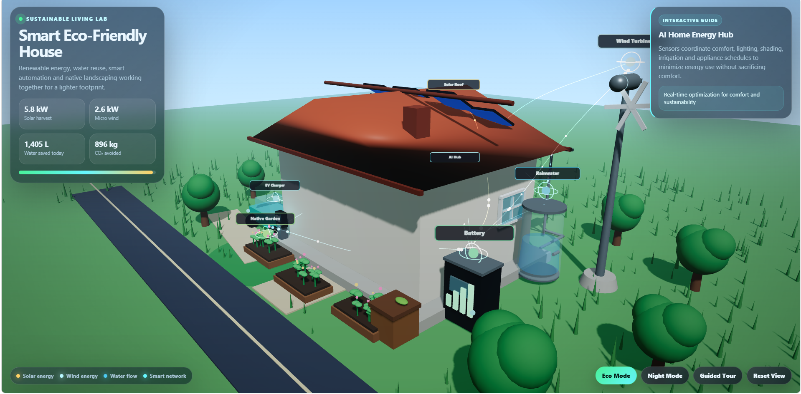
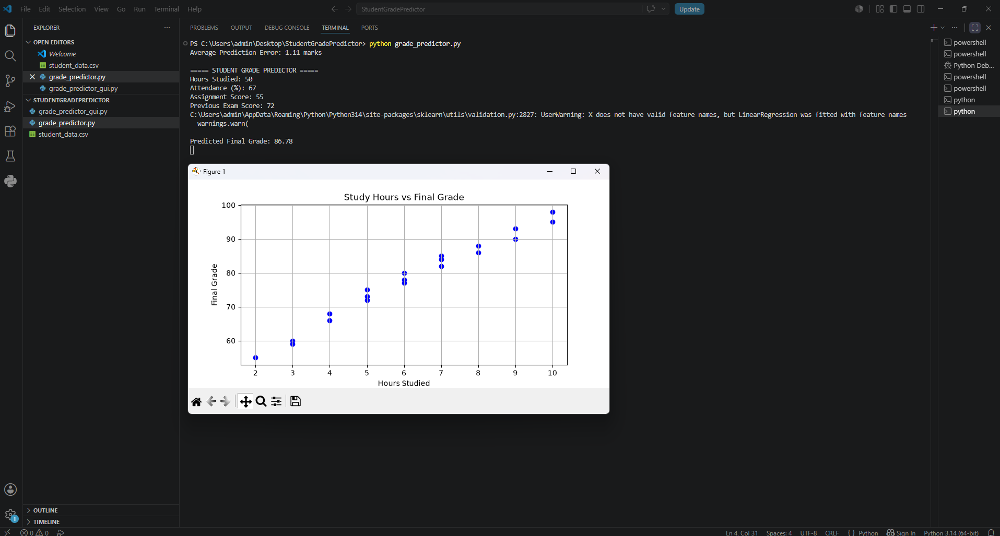

Project Overview
A portfolio of hands-on, project-based STEM work that moves learners and my own practice beyond theory into real builds. The three strands (an Arduino autonomous robot, a 3D-modelled smart eco-friendly house, and a machine learning model that predicts student performance) connect hardware engineering, sustainable design, and data science to tangible, real-world problems.
Each build was an exercise in turning an idea into something that works: writing firmware, modelling a structure, or training a model, then explaining the result clearly.
Key Responsibilities
- Designed and programmed an Arduino-based autonomous robot controller.
- Modelled a smart eco-friendly house in 3D promoting sustainable living.
- Built a Python and Scikit-learn model predicting student performance from academic metrics.
- Visualized study patterns and model outputs using Matplotlib.
- Linked each project to a real problem: automation, sustainability, and learner support.
- Documented builds so they could be demonstrated, taught from, and reused.
Builds & Technologies Delivered
- Arduino Autonomous Robot Controller
- 3D-Modelled Smart Eco-Friendly House
- Student Performance ML Predictor
- Matplotlib Study-Pattern Visualizations
- Sensing & Control Firmware
- Documented, Reusable Build Guides
Tools & Technologies Used
Build & Experiment Activities
- Wiring and programming the autonomous robot controller
- Modelling and refining the eco-house design in 3D
- Preparing data and training the performance-prediction model
- Visualizing results and study patterns with Matplotlib
- Testing, debugging, and iterating each build
- Documenting each project for demonstration and reuse
Impact & Outcomes
- Delivered a working autonomous robot demonstrating sensing and control logic.
- Produced a sustainable smart-house design concept with practical eco-features.
- Created a functional ML predictor with clear visual insights into study patterns.
- Showcased breadth across hardware, design, and applied AI in education.
Project Evidence



Skills Demonstrated
- Arduino Programming & Robotics
- 3D Modelling & Design
- Machine Learning with Python
- Data Visualization (Matplotlib)
- Applied Problem Solving
- Technical Documentation
Project Outcome
This project strengthened practical experience across three STEM disciplines (hardware, design, and data science) by delivering working, demonstrable builds rather than theory alone. It also enhanced the ability to connect technical skills to real-world problems and to present complex work clearly, providing rich material for both teaching and continued professional growth.